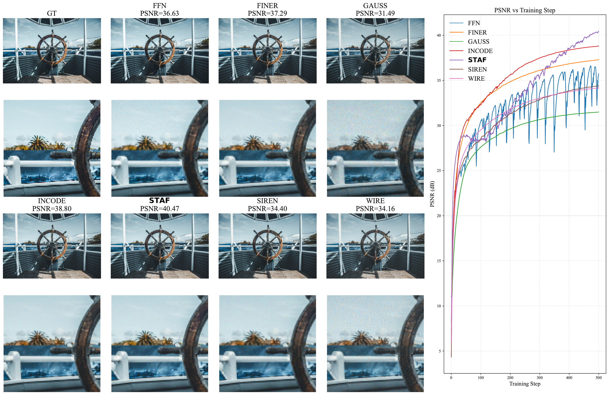
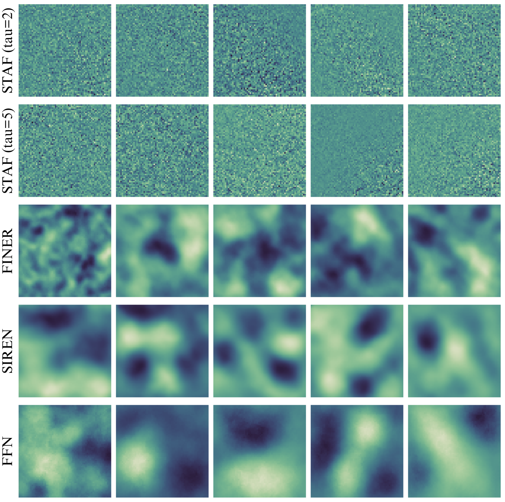
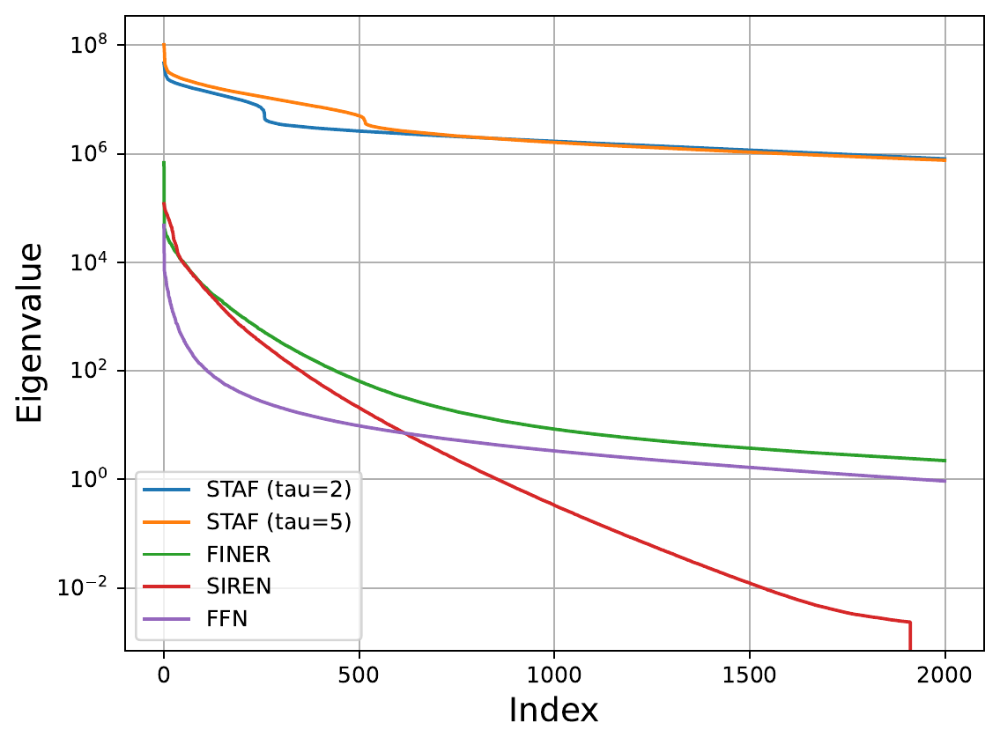
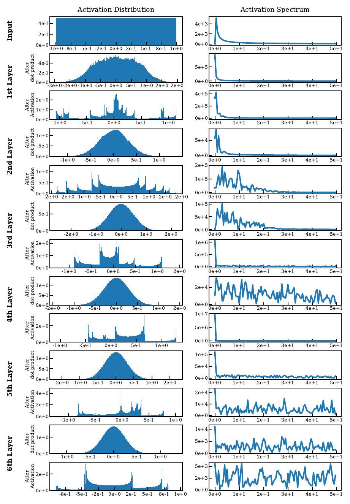
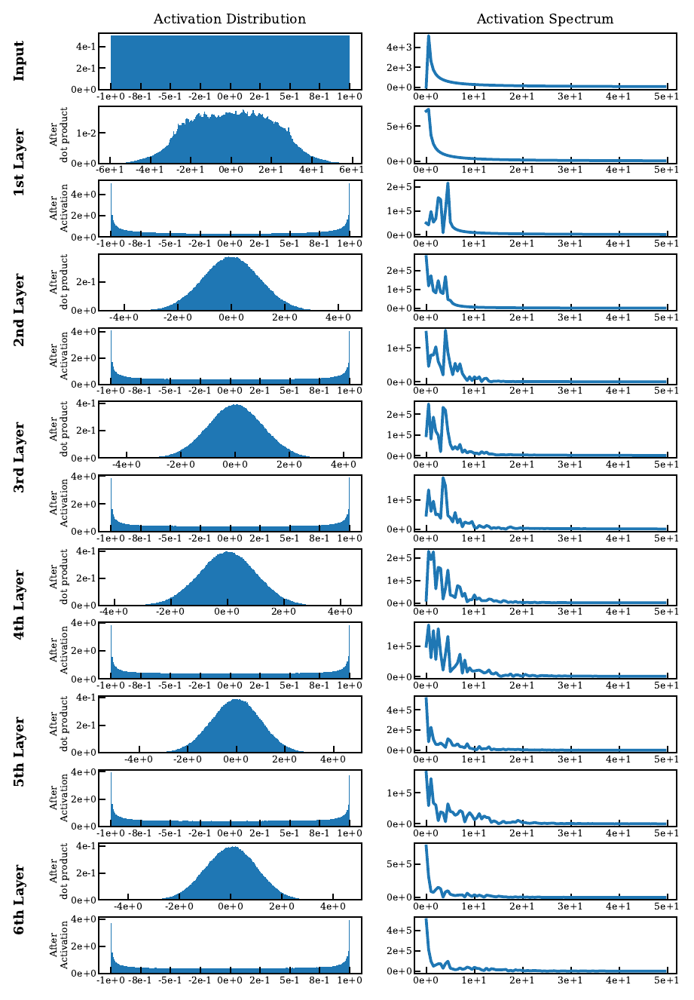
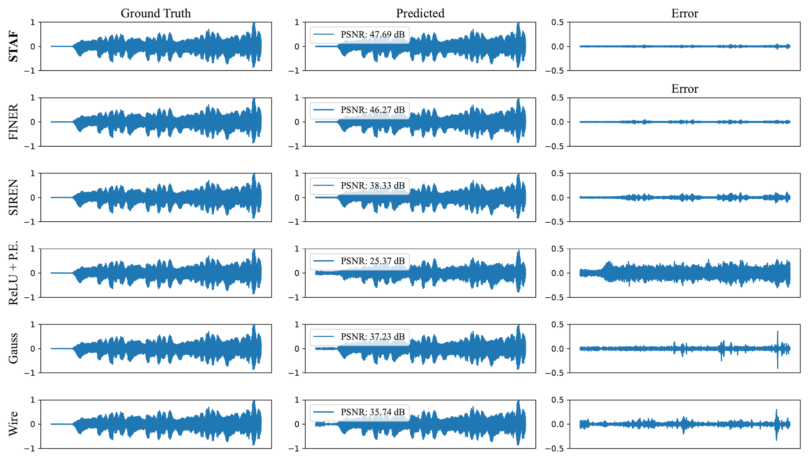
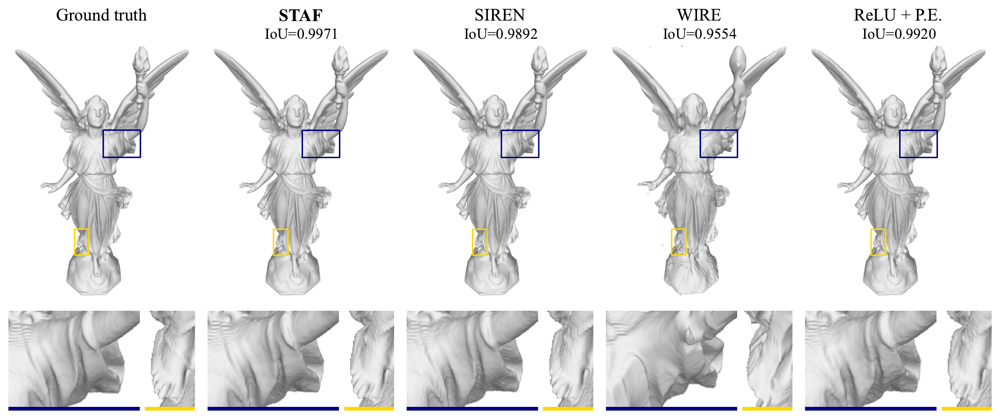
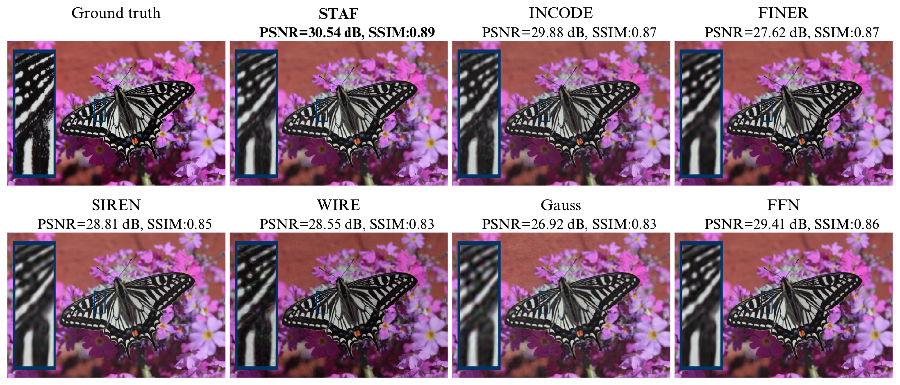
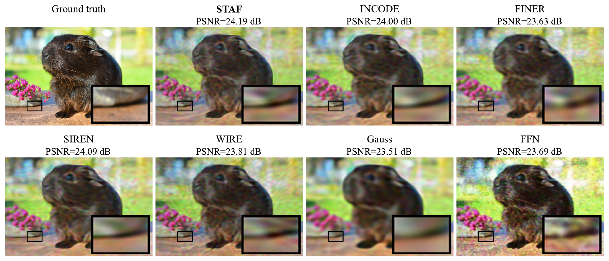
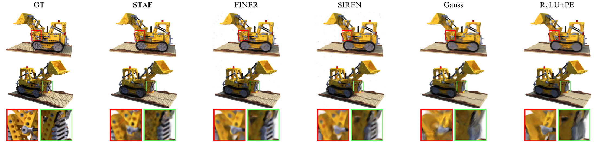

Transactions on Machine Learning Research, June 2026
A Unified Theory of Sinusoidal Activation Families for Implicit Neural Representations
McGill University, The University of Melbourne, MACSYS, University of Toronto, Vector Institute, University Health Network, University of Tehran
Abstract
Implicit Neural Representations (INRs) model continuous signals with compact neural networks and have become a standard tool in vision, graphics, and signal processing. STAF studies a broad family of sinusoidal activations for INRs and instantiates that view with a trainable Fourier-like activation whose amplitudes, frequencies, and phases are learned directly. The paper develops a unified theoretical and practical framework, including a Kronecker-equivalence result, an NTK-based capacity and convergence analysis, and an initialization scheme with unit-variance post-activations. Empirically, STAF is competitive and often stronger on images, audio, shapes, inverse problems, and NeRF.
Key Contributions
- Unifies SIREN and related multi-sinusoid INR activations under a single sinusoidal activation family.
- Shows how trainable sinusoidal parameters expand effective frequency support and reshape optimization behavior.
- Provides a practical initialization and parameter-sharing recipe that works well across INR tasks.
Image Representation
On image fitting tasks, STAF produces sharper reconstructions and stronger late-stage convergence than several INR baselines in the showcased examples from the paper.


Theory and Initialization
The paper connects trainable sinusoidal activations to both expressive growth and optimization dynamics. The figures below summarize the empirical NTK analysis and the initialization comparison used in the paper.




Audio
For audio reconstruction, the paper reports that STAF achieves the highest PSNR and the lowest reconstruction error on the featured Bach cello example.

Shapes
On 3D shape representation tasks, STAF achieves the strongest average IoU and the lowest average Chamfer distance among the reported methods.

Inverse Problems
The paper also evaluates STAF on super-resolution and denoising, where the model is particularly effective at recovering fine structure while remaining competitive in efficiency.


NeRF
In the paper’s NeRF experiments without positional encodings, STAF remains competitive and often stronger in PSNR while also improving perceptual quality on several scenes.

Paper
The full paper is available here: staf-tmlr-2026.pdf
BibTeX
@article{morsali2026staf,
title = {A Unified Theory of Sinusoidal Activation Families for Implicit Neural Representations},
author = {Alireza Morsali and MohammadJavad Vaez and Mohammadhossein Soltani and Amirhossein Kazerouni and Babak Taati and Morteza Mohammad-Noori},
journal = {Transactions on Machine Learning Research},
year = {2026},
url = {https://openreview.net/forum?id=ZDmBPYptbL}
}